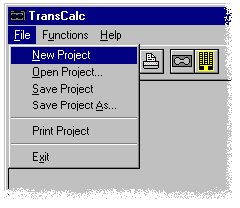
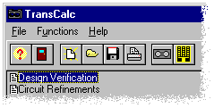

BUTTON on the TOOL BAR.
BUTTON on the TOOL BAR.Getting Started
Step 2
Creating a Project
From the File MENU, choose the New Project command, or click on the New Project BUTTON on the TOOL BAR.

Click the Design Verification  BUTTON in the TOOL BAR, or double click the Design Verification OUTLINE ITEM in the MAIN WINDOW.
BUTTON in the TOOL BAR, or double click the Design Verification OUTLINE ITEM in the MAIN WINDOW.
